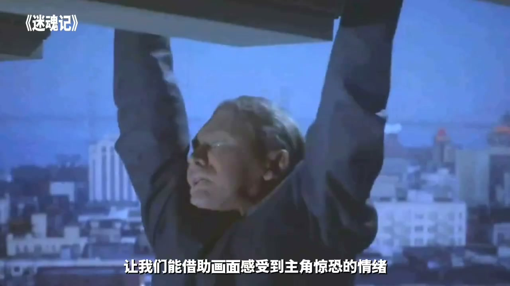
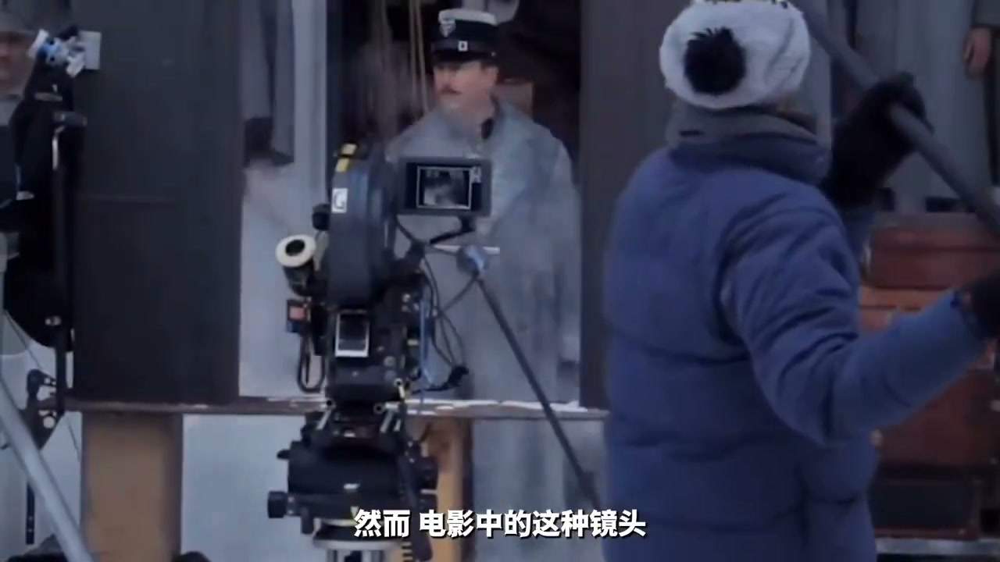
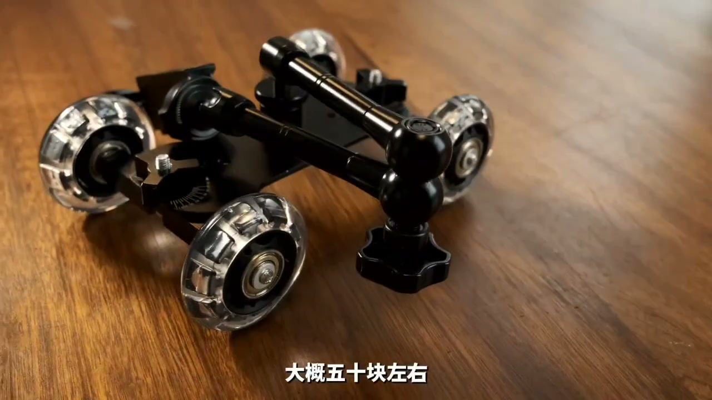
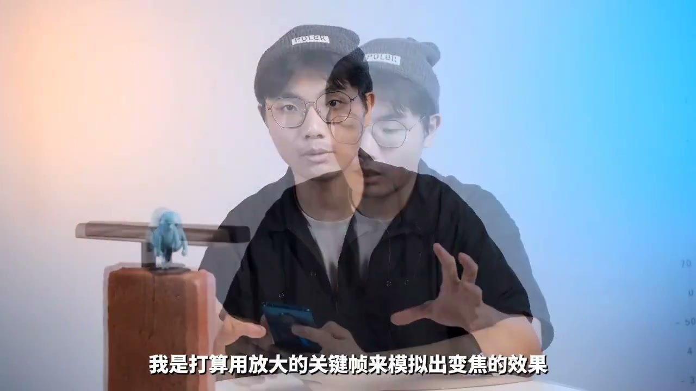
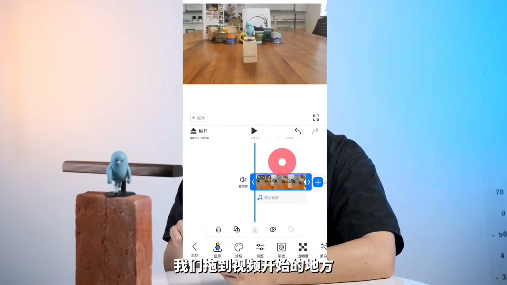

内容要点
[00:00] 除去故事、色調、質感
[00:03] 還有什麼能讓我們用手機拍攝的視頻也能擁有電影感
[00:06] 加入電影大師的鏡頭後去算一個
[00:09] 比如關於導演之名的
[00:11] 西虛柯克編繳
[00:23] 西虛柯克在他1958年的電影《迷魂記》中
[00:26] 第一次向我們展示的這種前景不動
[00:28] 背景不斷遠離觀眾的鬼魅鏡頭
[00:31] 讓我們能借助畫面感受到主角驚恐的情緒
[00:35] 西園裡是將攝影機不斷推向主體的同時
[00:38] 將焦段也有長焦改變至廣角
[00:41] 廣角鏡頭可以給我們帶來更大的取景範圍
[00:43] 讓我們可以看到更廣闊的背景
[00:45] 同時又和攝影機推進帶來的人物變大相互抵消
[00:49] 也就帶來了人物不動背景遠離的效果
[00:52] 然而電影中的這種鏡頭
[00:54] 往往需要昂貴的設備甚至跟焦源的配合
[00:57] 難道我們在家裡有沒有辦法完成了嗎
[01:00] 沒有關係
[01:02] 我還有手機和後期
[01:04] 想用手機拍出西虛老師的同一款效果
[01:06] 我們首先需要一段平穩的向天推的鏡頭
[01:09] 這時候我們可以借助一個額外的小道具
[01:12] 大概50塊左右
[01:13] 在某寶搜的手機攝影小推車可以找到
[01:15] 品牌我就不推薦了
[01:17] 當然如果你實在不想花錢
[01:18] 行李箱或者一切帶滾輪的東西也可以
[01:21] 如果連輪子都找不到
[01:23] 也可以用一塊媽布加一個紙杯
[01:25] 打電這樣的一套系統
[01:26] 我稱之為QBS
[01:28] 全B系統
[01:31] 在拍攝的時候
[01:32] 我們要注意使用將物體放在畫面中心
[01:35] 然後推手機的時候盡量保持均速
[01:38] 這是我們最終效果的關鍵
[01:39] 有條件的話最好拍4K
[01:41] 這樣後期空間更大一些
[01:45] 後期的話就比較簡單了
[01:46] 我是打算用放大的關鍵針來模擬出變焦的效果
[01:50] 我們先導入剛剛那段素材
[01:52] 把多餘的部分給剪掉
[01:54] 然後找到鏡頭停下的那一針
[01:56] 給它打上一個關鍵針
[01:58] 就點一下工具欄裡這個小零型
[02:00] 然後我們記一下主體在這一針的大小
[02:03] 或者也可以截個圖記一下
[02:04] 我們偷到視頻開始的地方
[02:06] 把主體放大到跟推進結束差不多的大小
[02:09] 這時候軟件就會自動生成一個關鍵針
[02:11] 視頻就有了一個放大的效果
[02:13] 我們想要的效果就完成了
[02:16] C3哥哥變焦的用途其實已經非常廣泛了
[02:19] 甚至在一些動畫作品中也能見到
[02:21] 不僅可以表現驚恐的情緒
[02:23] 還能表達出兩個角色內心慢慢靠攏的感覺
[02:26] 總之拍攝手法終究只是工具
[02:28] 只要靈活運用大師的鏡頭
[02:30] 真的變成我們作品裡亮眼的瞬間了
[02:34] 好的,這就是本期視頻的全部內容
[02:35] 如果大家喜歡學習做視頻的你
[02:36] 有所幫助
[02:37] 歡迎給我一件三連順便點個關注
[02:39] 我是布肚頭
[02:40] 我們下次再見






